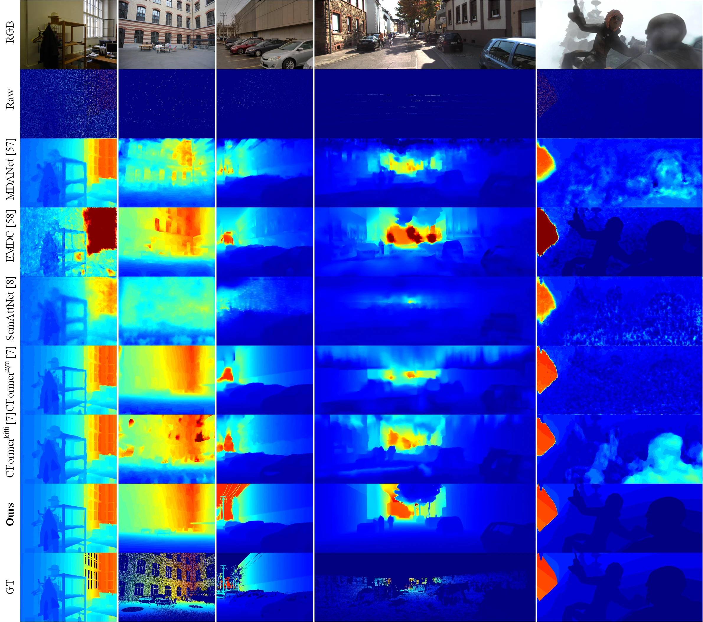
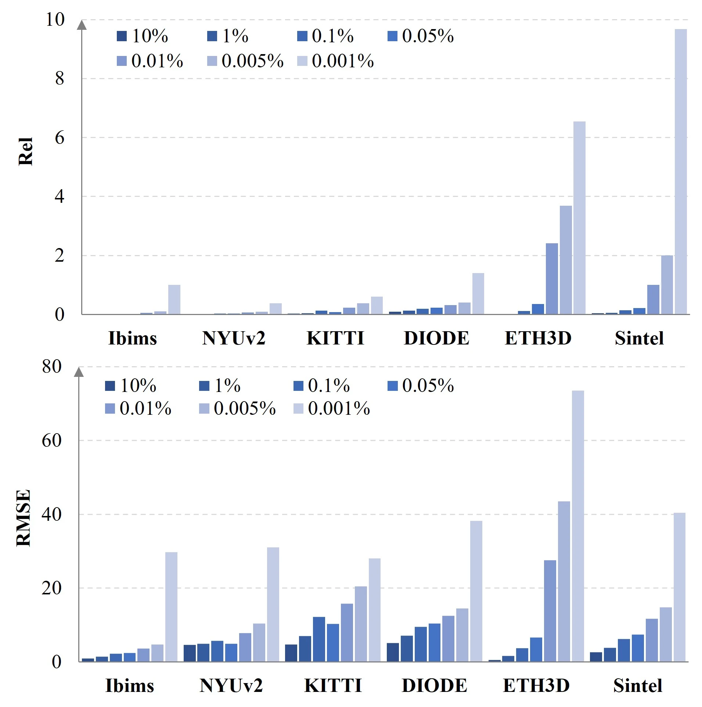
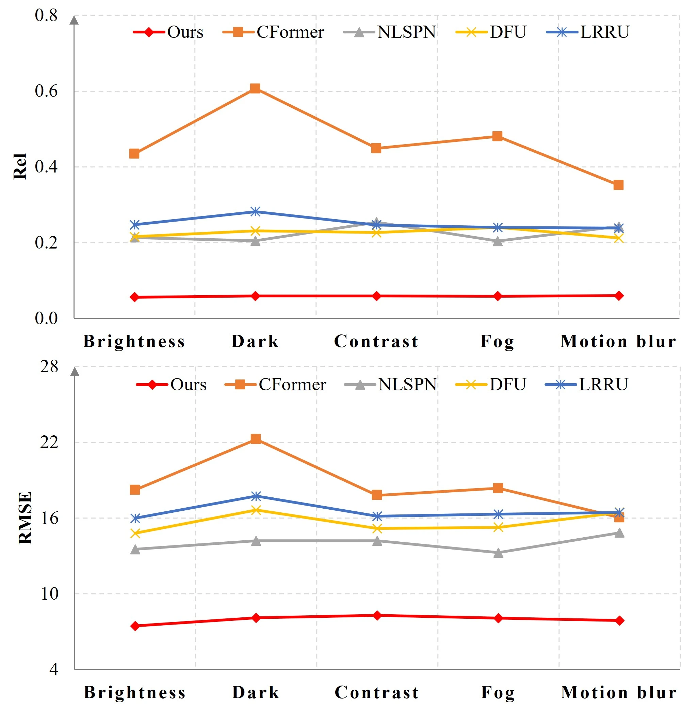

DEPTH COMPLETION · IEEE TPAMI 2025
Scale Propagation Network
for Generalizable Depth Completion
- 1Institute of Artificial Intelligence and Robotics, Xi'an Jiaotong University
- 2Intelligent Transportation Thrust of the Systems Hub, Hong Kong University of Science and Technology (GZ)
- 3Multimodal Experiences Lab, Dolby Laboratories Inc
![3D views of five scenes, one each from Ibims, ETH3D, Sintel, NYUv2 and KITTI, in three rows. Top row, Raw: the sparse input depth, shown as scattered points for the first three scenes, a depth map with holes for NYUv2 and LiDAR scan lines for KITTI. Middle row, Baseline: completed depth with bent walls, warped floors and smeared objects. Bottom row, Ours: completed depth in which the office, the garage, the close-up object, the kitchen and the street with cars keep straight surfaces and their structure.](assets/media/teaser.webp)
OVERVIEW
A normalization layer that carries depth scale from input to output
Depth completion infers a dense depth map from sparse depth measurements and an RGB image. Deep models do this well on the scenes they were trained on, but generalize poorly to scenes not observed in training. The paper traces a key bottleneck to the conventional normalization layers these networks borrow from image-analysis backbones: they build invariance to scene scale, while in depth completion the scale is exactly what has to be estimated. It proposes scale propagation normalization (SP-Norm), which propagates scale from input to output and keeps the normalization operator for easy convergence, and builds a network on SP-Norm and the ConvNeXt V2 backbone.
-
01
Scale is propagated, not normalized away
SP-Norm rescales its input with features that a single-layer perceptron learns from the normalized input, instead of outputting the normalized input as conventional layers do.
-
02
One model, six unseen datasets
Trained on a mix of four indoor/outdoor, real/synthetic datasets and tested on six others, with randomly sampled pixels, 4- to 64-line LiDAR points and structured-light depth with holes.
-
03
Fast, low-memory inference
A heavyweight encoder with a lightweight decoder. The Tiny configuration runs at 126.6 image/s in 330 MB on a 3090 GPU at 320 × 320.
METHOD
SP-Norm and a ConvNeXt V2-based encoder–decoder
The paper states a scale propagation property: the output dense depth should stay proportional to the input sparse depth, which it examines through the mean and variance of each layer's output. Conventional normalization layers (BN, IN, LN) cannot always satisfy it, because after normalization the output mean and variance depend only on learned affine factors that are constant at test time. Non-normalization techniques such as ReZero rescale the input with a learnable scalar and keep the scale, but removing normalization harms training stability, especially in large models. SP-Norm is designed to keep both.
![Two diagrams of feature distributions. Top, conventional normalization: two inputs with different means and variances are normalized to the same distribution, and learned affine factors then give a single output distribution whose mean and variance depend only on those factors. Bottom, scale propagation normalization: the two inputs are normalized, a single-layer perceptron (SLP) turns the normalized input into learned features, and each original input is multiplied by those features, giving two output distributions whose means and variances still follow their own inputs.](assets/media/sp-norm.webp)
-
SP-Norm
Three components: a normalization operator, an SLP and a multiplier. The input is normalized, the SLP produces learned features from it, and the original input is multiplied by those features. It operates along the channel dimension.
-
Property holds from the start
The paper derives the output mean and variance and shows that SP-Norm can always learn to satisfy the scale propagation property, and that it already does so at the beginning of training under Xavier Normal initialization.
-
Basic block
The ConvNeXt V2 block with every LN replaced by SP-Norm, GRN removed because it may suppress features from sparse depth maps with many zero-valued pixels, and GELU replaced by ReLU for speed.
-
Architecture and training
Four stages at 1/4 to 1/32 resolution, a heavyweight encoder, a decoder of three blocks, and long-range skip connections, in Tiny, Small, Base and Large configurations. Resized-Crop and Depth-Scaling augmentation simulate diverse scene scales.
![Network diagram. A stem feeds four encoder stages at H/4, H/8, H/16 and H/32 resolution with 3, 3, 9 and 3 basic blocks, each preceded by a downsampling layer. The decoder path returns through upsampling layers with one basic block at each of the H/16, H/8 and H/4 stages and ends in a head. Legend: the stem is a 3×3 convolution followed by downsampling; the head is upsampling followed by a 3×3 convolution; downsampling is SP-Normalization and a 2×2 stride-2 convolution; upsampling is a 2×2 transposed convolution; a block is a 7×7 depth-wise convolution, SP-Normalization, a 1×1 convolution, ReLU and a 1×1 convolution.](assets/media/network.webp)
Released by the authors in the code repository: training and test code, pretrained Tiny, Small, Base and Large models, a test dataset, and two example training sets (UnrealCV, and hole masks collected from HRWSI).
RESULTS
Six unseen datasets, three kinds of sparse depth
The network is trained on a mix of Matterport3D, HRWSI, vKITTI and UnrealCV and tested on Ibims, KITTI, NYUv2, DIODE, ETH3D and Sintel, none of them seen in training. It is compared with ten depth completion methods, both as twelve officially released models and as six models retrained on the paper's training data. Metrics are absolute relative error (Rel), root mean squared error (RMSE), and the average rank across datasets and metrics (Rank); lower is better for all three.
- Rank · six unseen datasets
- 1.1
- Average rank among thirteen models with 0.1%/1%/10% random pixels; the next best released model is at 2.1. Table II.
- KITTI · Rel
- 0.065
- Random-pixel inputs, KITTI unseen in training; 0.156 for the next best released model. Table II.
- KITTI · 4-line LiDAR
- 0.055
- Rel, with RMSE 8.21; best of the released models on 4-, 8- and 16-line inputs. Table III.
- Tiny · image/s
- 126.6
- Inference speed on a 3090 GPU at 320 × 320, with 35.0 M parameters and 330 MB memory. Table VI.
Randomly sampled pixels
With sparse depth randomly sampled from the ground truth, the model has the lowest Rank and the best Rel on all six datasets; a released baseline is ahead only in RMSE on NYUv2.
Table II of the paper: comparison with released baseline models on sparse depth maps with randomly sampled 0.1%/1%/10% valid pixels, averaged over the three levels.
| Method | Ibims | NYUv2 | KITTI | DIODE | ETH3D | Sintel | Rank ↓ | ||||||
|---|---|---|---|---|---|---|---|---|---|---|---|---|---|
| Rel ↓ | RMSE ↓ | Rel ↓ | RMSE ↓ | Rel ↓ | RMSE ↓ | Rel ↓ | RMSE ↓ | Rel ↓ | RMSE ↓ | Rel ↓ | RMSE ↓ | ||
| NLSPNnyu | 0.106 | 3.99 | 0.056 | 7.06 | 0.208 | 14.55 | 0.264 | 9.65 | 1.151 | 10.83 | 5.572 | 13.14 | 4.8 |
| NLSPNkitti | 0.098 | 4.64 | 0.095 | 11.27 | 0.240 | 15.25 | 0.333 | 11.19 | 1.168 | 12.01 | 8.038 | 18.04 | 7.1 |
| GuideNet | 0.238 | 7.76 | 0.170 | 17.67 | 0.472 | 22.31 | 0.544 | 15.78 | 1.445 | 14.83 | 11.045 | 30.39 | 11.7 |
| TWISE | 0.118 | 5.67 | 0.117 | 15.22 | 0.304 | 27.87 | 0.327 | 13.27 | 1.207 | 13.14 | 10.177 | 22.39 | 9.4 |
| MDANet | 0.159 | 6.79 | 0.225 | 22.59 | 0.302 | 19.25 | 0.272 | 12.60 | 0.554 | 8.12 | 6.232 | 18.87 | 8.2 |
| EMDC | 0.194 | 8.85 | 0.178 | 19.85 | 0.214 | 15.46 | 0.365 | 14.51 | 0.126 | 3.39 | 4.204 | 13.12 | 7.6 |
| SemAttNet | 0.184 | 8.83 | 0.315 | 31.48 | 0.325 | 30.67 | 0.313 | 17.96 | 0.928 | 10.10 | 6.781 | 25.34 | 10.6 |
| CFormernyu | 0.117 | 4.01 | 0.075 | 9.22 | 0.324 | 17.81 | 0.275 | 9.64 | 1.656 | 14.76 | 6.281 | 15.73 | 7.0 |
| CFormerkitti | 0.206 | 7.44 | 0.093 | 10.66 | 0.533 | 22.09 | 0.504 | 14.14 | 2.426 | 22.40 | 18.661 | 27.86 | 10.7 |
| LRRU | 0.072 | 4.53 | 0.093 | 12.92 | 0.318 | 18.76 | 0.240 | 11.29 | 0.306 | 5.45 | 0.997 | 9.71 | 5.2 |
| G2MD | 0.018 | 1.70 | 0.027 | 4.99 | 0.156 | 12.13 | 0.148 | 7.36 | 0.282 | 3.54 | 0.815 | 5.28 | 2.1 |
| DFU | 0.092 | 4.95 | 0.098 | 13.98 | 0.277 | 17.66 | 0.266 | 11.18 | 0.726 | 8.18 | 2.623 | 12.59 | 5.8 |
| Ours | 0.012 | 1.51 | 0.025 | 5.11 | 0.065 | 8.00 | 0.137 | 7.29 | 0.051 | 1.98 | 0.080 | 4.24 | 1.1 |
Superscripts mark the dataset a released model was trained on (NYUv2 or KITTI). GuideNet, TWISE, MDANet, SemAttNet, LRRU and DFU are also KITTI-trained; EMDC and G2MD are trained on other datasets. CFormer is CompletionFormer and G2MD is G2-MonoDepth. The “Ours” values are those of the Large configuration in Table XI. Highlighted values are the best in each column.
LiDAR lines and sensor holes
With LiDAR points sampled from KITTI and raw structured-light depth from NYUv2, the model again has the lowest Rank: best on 4-, 8- and 16-line inputs and second best on the NYUv2 holes. On 32- and 64-line inputs the KITTI-trained baselines are ahead; the paper notes that they are trained on KITTI's training set, while KITTI is unseen for this model.
Table III of the paper: comparison with released baseline models on raw depth maps with holes from NYUv2 and on sparse depth maps with 4/8/16/32/64-line LiDAR points from KITTI.
| Method | NYUv2 holes | KITTI 4-line | KITTI 8-line | KITTI 16-line | KITTI 32-line | KITTI 64-line | Rank ↓ | ||||||
|---|---|---|---|---|---|---|---|---|---|---|---|---|---|
| Rel ↓ | RMSE ↓ | Rel ↓ | RMSE ↓ | Rel ↓ | RMSE ↓ | Rel ↓ | RMSE ↓ | Rel ↓ | RMSE ↓ | Rel ↓ | RMSE ↓ | ||
| NLSPNnyu | 0.025 | 5.49 | 0.193 | 16.64 | 0.077 | 10.54 | 0.046 | 7.67 | 0.038 | 6.33 | 0.035 | 5.61 | 6.9 |
| NLSPNkitti | 0.044 | 10.17 | 0.188 | 13.35 | 0.103 | 8.96 | 0.041 | 5.24 | 0.023 | 3.45 | 0.012 | 2.24 | 3.8 |
| GuideNet | 1.580 | 97.28 | 0.567 | 28.18 | 0.275 | 16.87 | 0.115 | 8.76 | 0.054 | 5.26 | 0.022 | 3.17 | 10.7 |
| TWISE | 0.084 | 10.97 | 0.372 | 41.35 | 0.134 | 21.27 | 0.066 | 16.32 | 0.034 | 10.39 | 0.019 | 6.55 | 9.6 |
| MDANet | 0.298 | 24.58 | 0.208 | 16.08 | 0.130 | 10.34 | 0.051 | 5.47 | 0.026 | 3.49 | 0.013 | 2.23 | 6.3 |
| EMDC | 0.729 | 63.82 | 0.485 | 24.77 | 0.367 | 22.94 | 0.267 | 20.96 | 0.215 | 19.73 | 0.187 | 18.90 | 12.5 |
| SemAttNet | 0.283 | 25.56 | 0.258 | 24.76 | 0.213 | 25.37 | 0.106 | 17.70 | 0.047 | 10.67 | 0.023 | 6.74 | 10.8 |
| CFormernyu | 0.335 | 26.57 | 0.225 | 17.52 | 0.105 | 12.23 | 0.049 | 8.06 | 0.039 | 6.38 | 0.036 | 5.76 | 9.4 |
| CFormerkitti | 0.029 | 6.52 | 0.262 | 16.13 | 0.085 | 9.27 | 0.040 | 5.66 | 0.021 | 3.56 | 0.012 | 2.30 | 4.3 |
| LRRU | 0.059 | 13.68 | 0.226 | 16.57 | 0.107 | 10.45 | 0.042 | 5.84 | 0.022 | 3.29 | 0.013 | 2.20 | 5.0 |
| G2MD | 0.015 | 3.69 | 0.070 | 9.88 | 0.045 | 7.25 | 0.035 | 5.88 | 0.028 | 4.76 | 0.025 | 4.23 | 4.2 |
| DFU | 0.098 | 17.47 | 0.176 | 14.93 | 0.089 | 9.72 | 0.042 | 5.96 | 0.022 | 3.43 | 0.013 | 2.21 | 4.8 |
| Ours | 0.019 | 4.23 | 0.055 | 8.21 | 0.037 | 6.31 | 0.029 | 5.21 | 0.025 | 4.40 | 0.022 | 3.81 | 3.0 |
Model names as in the table above. Highlighted values are the best in each column; NLSPNkitti ties the best 64-line Rel.
Retrained baselines
To separate the architecture from the training data, six baselines (NLSPN, MDANet, CFormer, LRRU, G2MD and DFU) are retrained on the paper's training data with the same augmentations. The model keeps the lowest Rank in both settings: 1.5 against 1.7 for the best retrained baseline on random pixels, and 1.5 against 2.0 on LiDAR lines and NYUv2 holes (Tables IV and V of the paper).
Speed and memory
Inference cost is measured on a 3090 GPU at 320 × 320 in PyTorch. The Tiny model is the fastest of all compared models at 126.6 image/s (7.9 ms per forward pass), with the second-lowest FLOPs (15.4 G) and the third-lowest memory (330 MB), and it is still more accurate than every baseline. The Large model, the most accurate, runs at 60.2 image/s with 235.5 M parameters and 1176 MB; CFormer runs at 11.1 image/s (Table VI of the paper). With the original ConvNeXt V2 block in place of the modified one, the Tiny model's speed drops from 126.6 to 114.1 image/s.
Visual comparison
The examples come from the experiments in Tables II and III. The paper attributes the clear structures and accurate scene scales to the scale propagation property of SP-Norm.

Robustness
With fewer valid pixels, the model stays effective down to a sparsity level of 0.005% in most scenarios and degrades significantly at 0.001%, about 2.05 valid pixels at 640 × 320. On ETH3D it degrades rapidly below 0.01%, which the paper attributes to that dataset's sparse ground truth. Under five KITTI-C conditions (brightness, dark, contrast, fog and motion blur, on Eigen's test split) it has the lowest error among the compared released models, which the paper attributes to the diverse training data.


Ablations and scope
In ablations trained for 90 epochs on random-pixel inputs, SP-Norm ranks first on both metrics against BN, IN, LN and ReZero in the same network, with ReZero second; inserting SP-Norm into NLSPN, CFormer, LRRU and DFU improves the Rank of all four. Without the normalization operator, or with an adder in place of the multiplier, the network does not converge (Tables VII–XI of the paper).
The paper states the conditions: every test dataset is unseen in training, and baselines trained on KITTI's training set remain ahead on its 32- and 64-line inputs; training uses automatic mixed precision, which may slightly impair the final performance; and the proportions between input and output scales in SP-Norm are constant at test time, chosen for simplicity and efficiency. The authors name dynamic proportions, pseudo labels, pre-training and unlabeled data as future work.
CITATION
@article{wang2025scale,
title={Scale Propagation Network for Generalizable Depth Completion},
author={Wang, Haotian and Yang, Meng and Zheng, Xinhu and Hua, Gang},
journal={IEEE Transactions on Pattern Analysis and Machine Intelligence},
volume={47},
number={3},
pages={1908--1922},
year={2025},
doi={10.1109/TPAMI.2024.3513440},
}